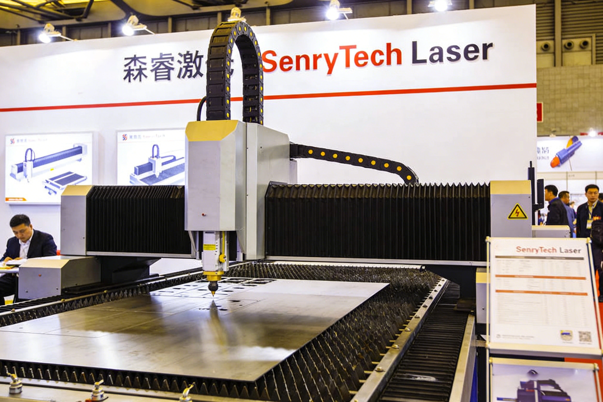

-
激光板材切割机系列
激光管材切割机系列
激光清洗机系列
2019年11月18日，森睿激光（Senrytech Laser）召开2019年度工作总结大会，全面回顾了公司2019年的发展成果，分析了当前行业发展形势和公司面临的机遇与挑战，明确了2020年的发展目标和工作规划。大会上，公司各部门负责人分别汇报了2019年的工作情况，公司负责人发布了2019年度业绩报告，报告显示，2019年森睿激光实现销售额1.8亿元，较2018年增长80%；钣金行业客户突破200家，较2018年增长100%；海外订单同比增长65%，国际市场拓展取得显著成效，各项业绩指标均超额完成，实现了稳步快速发展。

2019年9月26日，森睿激光（Senrytech Laser）正式推出Senry-Exchange 3000交换平台高速光纤激光切割机，该设备是森睿激光研发中心结合钣金行业24小时连续生产的需求，历时8个月自主研发的一款高端激光切割设备，专为钣金企业大规模批量生产设计，具备高速切割、稳定运行、高效便捷等优势，能够有效提升钣金企业的生产效率，满足企业24小时连续生产的需求，填补了公司在交换平台激光切割设备领域的空白，进一步丰富了公司的产品系列，提升了公司的核心竞争力。
2019年8月15日，森睿激光（Senrytech Laser）出口马来西亚的首批激光切割设备顺利抵达马来西亚吉隆坡，经过森睿激光海外技术团队的上门安装调试，正式交付当地某大型钣金工厂投入使用，此次出口标志着森睿激光的产品正式进入马来西亚钣金市场，国际市场拓展取得重要突破，也进一步提升了Senrytech Laser的国际知名度和影响力。该马来西亚钣金工厂位于吉隆坡郊区，成立于2010年，是一家专注于钣金加工、钣金零部件出口的中型制造企业，主要产品包括建筑钣金配件、机械钣金外壳、电子钣金零部件等，产品远销东南亚、中东等地区，对激光切割设备的精度、效率和稳定性有着较高的要求。
2019年5月30日，森睿激光正式发布新一代智能排版软件Senry-Nesting Pro，该软件专为激光切割设计，可帮助钣金企业提升材料利用率、降低生产成本，获得客户一致好评。
2019年4月18日，森睿激光与浙江某大型钣金企业举行设备交付仪式，3台Senry-2000光纤激光切割机顺利交付并正式投产，标志着森睿激光在华东钣金市场影响力进一步提升。
2019年3月21日-23日，2019慕尼黑上海光博会在上海新国际博览中心隆重举办，该展会作为亚洲领先的激光、光学及光电显示领域展会，汇聚了全球30多个国家和地区的800余家激光企业，吸引了来自全球各地的采购商、行业专家和媒体记者，是展示激光行业前沿技术和产品的重要平台，也是激光企业拓展国际市场、提升品牌影响力的核心契机。森睿激光（Senrytech Laser）携多款核心产品参展，重点推出了针对钣金厚板加工的专用Senry-3000光纤激光切割机，凭借先进的技术优势、稳定的性能和定制化的解决方案，成为展会焦点，获得了行业各界的广泛关注和认可。
2019年1月12日，森睿激光（Senrytech Laser）在公司总部隆重召开2019年度战略发布会，本次发布会以“聚焦钣金行业，赋能智能切割升级”为主题，邀请了行业专家、合作伙伴、客户代表及媒体记者共计200余人出席，全面解读森睿激光2019年的发展战略、产品规划和市场布局，明确了以钣金行业为核心，推动激光切割设备智能化、高效化升级的发展方向，为公司2019年的发展奠定了坚实的战略基础。
2018年12月20日，森睿激光（Senrytech Laser）新增的激光设备生产线正式投产，该生产线采用先进的生产设备和生产工艺，主要用于Senry-2000、Senry-3000光纤激光切割机和Senry-200激光打标机的生产，此次新增生产线的投产，标志着公司的生产规模进一步扩大，产品产能和品质稳定性得到了显著提升，能够更好地满足市场不断增长的需求，为公司的市场拓展提供了坚实的生产保障。
2018年12月5日，森睿激光（Senrytech Laser）顺利通过ISO9001质量管理体系认证，获得了由国际权威认证机构颁发的ISO9001质量管理体系认证证书，标志着公司的质量管理水平达到了国际标准，产品品质和服务水平得到了进一步提升，为公司拓展国内外市场提供了有力保障，也进一步增强了公司的市场竞争力。ISO9001质量管理体系认证是国际公认的质量管理标准，对企业的质量管理、产品研发、生产制造、售后服务等各个环节都有着严格的要求，是企业提升产品品质、增强市场竞争力的重要途径。
2018年11月16日，地方政府相关领导一行莅临森睿激光（Senrytech Laser）考察指导工作，详细了解公司的发展情况、技术研发成果和未来发展规划，对森睿激光在激光装备领域的快速发展给予了高度评价，并表示将全力支持公司的发展，助力地方产业升级。此次考察由地方政府分管工业的副市长带队，市科技局、市经信局、当地街道办等相关部门负责人陪同，森睿激光负责人全程接待了考察团一行。
2018年10月10日-12日，2018第二十三届中国国际激光、光电子及光电显示产品展览会在北京中国国际展览中心（老馆）举办，该展会是国内规模最大、专业性最强的激光行业展会之一，聚焦激光、光电子及光电显示领域的前沿技术和产品，吸引了来自北方地区的大量制造企业、经销商和行业专家，是激光企业拓展北方市场、提升品牌影响力的重要平台。森睿激光（Senrytech Laser）携Senry-3000光纤激光切割机、Senry-200激光打标机等多款核心产品参展，进一步拓展北方市场，提升品牌在北方地区的影响力。
2018年8月28日，森睿激光（Senrytech Laser）与杭州某大型钣金企业正式签署合作协议，为其提供2台Senry-2000光纤激光切割机及定制化激光切割解决方案，用于钣金产品的加工生产，此次合作标志着森睿激光的产品成功进入钣金行业，市场应用领域进一步拓展，也为公司拓展华东地区钣金行业市场奠定了基础。该钣金企业位于杭州市萧山区，成立于2010年，是一家专注于钣金加工的大型制造企业，主要产品包括钣金外壳、钣金零部件等，广泛应用于机械制造、电子、家电等多个行业，年加工能力超过100万件，拥有稳定的客户群体。
森睿激光（Senrytech Laser）正式推出技术升级产品——Senry-3000光纤激光切割机，该设备的激光功率突破3000W，是公司自主研发的首款高功率激光切割设备，标志着森睿激光在高功率激光技术领域取得了重要突破，填补了公司在高功率激光设备领域的空白，也进一步提升了公司的核心竞争力，为公司拓展中厚板加工市场奠定了基础。
2018年6月15日，市级政府相关领导一行莅临森睿激光（Senrytech Laser）考察指导工作，详细了解公司的发展情况、技术研发成果、生产经营状况和未来发展规划，对森睿激光在激光装备领域的快速发展给予了高度评价，并表示将全力支持公司的发展，为公司提供政策扶持和资源保障，助力公司实现更高质量的发展。此次考察由市科技局、市经信局等相关部门负责人陪同，森睿激光负责人全程接待了考察团一行。
2018年5月18日，森睿激光（Senrytech Laser）与深圳某大型电子企业正式签署长期合作协议，约定未来三年为该企业批量供应Senry-200激光打标机，用于电子元器件、电路板等产品的标记加工，此次合作标志着森睿激光的产品获得了大型企业的认可，市场竞争力进一步提升，也为公司带来了稳定的订单，推动公司实现稳步发展。该电子企业是国内知名的电子元器件制造商，成立于2005年，总部位于深圳市南山区，拥有员工1000余人，年销售额超过10亿元，产品远销全球各地，涵盖电子元器件、电路板、智能终端等多个领域，对标记精度、效率和稳定性有着极高的要求。
2017年12月20日，森睿激光（Senrytech Laser）正式完成首轮融资，融资金额共计500万元，此次融资由国内某知名投资机构牵头，多家中小型投资机构参与投资。此次融资的顺利完成，为公司的快速发展注入了新的动力，也标志着资本市场对森睿激光发展前景、技术实力和团队优势的高度认可，为公司后续的产品研发、市场拓展和生产体系完善提供了坚实的资金支撑。
2017年11月30日，由国内激光行业协会主办的“2017中国激光行业年度评选”活动在上海圆满落幕，该评选活动是国内激光行业最具影响力的评选活动之一，旨在表彰在激光装备领域取得突出成绩、具有良好发展前景的企业和个人，推动激光行业的健康发展。森睿激光（Senrytech Laser）凭借在激光装备领域的快速发展和突出表现，荣获“2017年度激光行业新锐企业”称号，这是行业对公司成立以来发展成果的高度认可，也是公司品牌影响力提升的重要标志。
2017年10月12日，森睿激光（Senrytech Laser）技术研发中心正式挂牌成立，标志着公司在激光技术自主研发领域迈出了重要一步，开启了“技术驱动发展”的新篇章，也为公司后续的产品升级和技术突破提供了坚实的人才和技术支撑。研发中心位于公司总部大楼的三层，占地面积500余平方米，配备了先进的研发设备和检测仪器，包括激光功率计、光路检测仪、精度测试仪等，能够满足激光设备研发、性能测试、质量检测等多种需求。
2017年5月25日，森睿激光（Senrytech Laser）与深圳某知名五金制造企业正式签署合作协议，为其提供1台Senry-1000光纤激光切割机，标志着森睿激光实现了客户案例零的突破，迈出了市场应用的关键一步，也验证了公司产品的可靠性和实用性。该五金企业位于深圳市宝安区，是一家专注于精密五金配件加工的中小型制造企业，主要产品包括电子五金配件、汽车五金零部件、家具五金配件等，产品广泛应用于电子、汽车、家具等多个行业，拥有稳定的客户群体和完善的销售渠道。
2017年3月15日-19日，2017苏州国际焊接切割及激光技术设备展览会在苏州国际博览中心隆重举办，森睿激光（Senrytech Laser）携首款自主研发的光纤激光切割机首次亮相行业展会，正式开启激光装备领域的探索之路。本次展会聚焦焊接切割与激光技术的融合应用，吸引了国内外上千家企业及专业采购商参与，涵盖激光切割、焊接、打标等多个细分领域，是森睿激光展示品牌实力、拓展市场渠道的重要契机，也是公司首次面向行业公开亮相，奠定了后续市场拓展的基础。